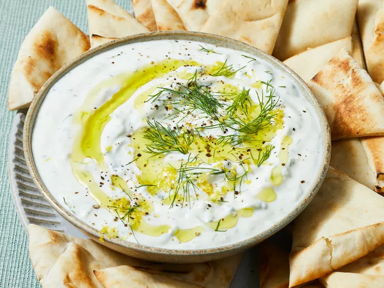

Tzatziki

Description
Dope ass greek dish that is full of greek yogurt, cucumber, garlic. Florence Pugh makes it best.
Ingredients
- Greek yogurt
- Cucumber
- Garlic
- Salt
Steps
- Chop up the cucumber
- Let the cucumber drain. Add salt, then add it to a bowl lined with a paper towel
- Finely mince garlic
- Mix all together and serve